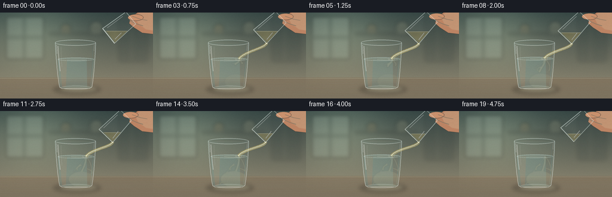
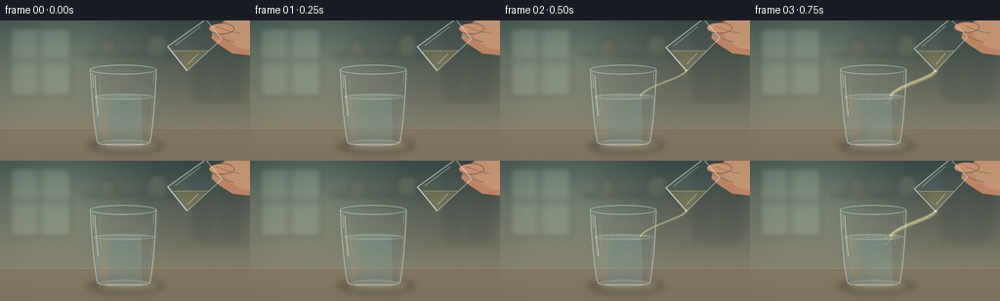

CODING AGENTS AS PIXEL WORLD MODELS
traex/GPT-5.6-Sol · phygen_138
点击播放 · 原生 RGB 像素
逐轮保存的候选
回放视频、检查图与代码变化。
每份候选均可单独播放。实际图片检查记录在下方工具轨迹中。
候选 01播放与检查图
点击播放 · 原生 RGB 像素


展开代码变化
--- 上一保存版本
+++ 本次保存版本
@@ -0,0 +1,274 @@
+from pathlib import Path
+import json, math
+import numpy as np
+from PIL import Image, ImageDraw, ImageFilter
+from artifact_io import save
+
+ROOT = Path(__file__).resolve().parent
+SPEC = json.loads((ROOT / 'task_spec.json').read_text())
+W, H, N = SPEC['width'], SPEC['height'], SPEC['frames']
+S = 4
+WS, HS = W*S, H*S
+rng = np.random.default_rng(138)
+
+
+def sc(v): return int(round(v*S))
+def pts(seq): return [(sc(x), sc(y)) for x,y in seq]
+def ellipse(draw, box, **kw): draw.ellipse(tuple(sc(v) for v in box), **kw)
+def polygon(draw, p, **kw): draw.polygon(pts(p), **kw)
+def line(draw, p, fill, width=1, joint='curve'):
+ draw.line(pts(p), fill=fill, width=max(1, sc(width)), joint=joint)
+
+def bezier(p0,p1,p2,p3,n=40):
+ out=[]
+ for u in np.linspace(0,1,n):
+ v=1-u
+ out.append((v**3*p0[0]+3*v*v*u*p1[0]+3*v*u*u*p2[0]+u**3*p3[0],
+ v**3*p0[1]+3*v*v*u*p1[1]+3*v*u*u*p2[1]+u**3*p3[1]))
+ return out
+
+def smooth(a,b,x):
+ if b == a: return float(x >= b)
+ z=max(0,min(1,(x-a)/(b-a)))
+ return z*z*(3-2*z)
+
+def rgba_layer(): return Image.new('RGBA',(WS,HS),(0,0,0,0))
+
+def alpha_comp(base, over): return Image.alpha_composite(base, over)
+
+def clip_below(poly, ycut):
+ """Clip polygon in image coordinates to y >= ycut."""
+ out=[]
+ for i,A in enumerate(poly):
+ B=poly[(i+1)%len(poly)]
+ Ain=A[1]>=ycut; Bin=B[1]>=ycut
+ if Ain: out.append(A)
+ if Ain != Bin:
+ u=(ycut-A[1])/(B[1]-A[1])
+ out.append((A[0]+u*(B[0]-A[0]),ycut))
+ return out
+
+# Stable, gently out-of-focus kitchen backdrop.
+yy=np.linspace(0,1,HS)[:,None]
+xx=np.linspace(0,1,WS)[None,:]
+wall_top=np.array([53,69,67.],float)
+wall_bottom=np.array([130,126,107.],float)
+a=np.clip(yy/0.78,0,1)[...,None]
+bg=wall_top*(1-a)+wall_bottom*a
+bg=np.broadcast_to(bg,(HS,WS,3)).copy()
+# Soft pool of daylight from the left.
+glow=np.exp(-(((xx-.23)/.31)**2+((yy-.24)/.42)**2))[...,None]
+bg += glow*np.array([35,38,30.])
+bg=np.clip(bg,0,255).astype(np.uint8)
+background=Image.fromarray(bg,'RGB').convert('RGBA')
+blur=rgba_layer(); d=ImageDraw.Draw(blur,'RGBA')
+# Window and distant cabinetry, deliberately defocused.
+d.rounded_rectangle((sc(10),sc(7),sc(73),sc(78)), radius=sc(3), fill=(179,198,181,52), outline=(229,238,219,45), width=sc(1))
+d.rectangle((sc(39),sc(8),sc(42),sc(78)), fill=(54,68,65,42))
+d.rectangle((sc(11),sc(40),sc(73),sc(43)), fill=(54,68,65,35))
+d.rounded_rectangle((sc(198),sc(6),sc(247),sc(83)), radius=sc(4), fill=(38,49,48,35))
+d.line(pts([(220,7),(220,82)]),fill=(190,181,153,28),width=sc(1))
+# shelf and indistinct vessels
+d.rounded_rectangle((sc(82),sc(34),sc(188),sc(37)),radius=sc(1),fill=(35,40,38,62))
+ellipse(d,(101,19,119,36),fill=(174,143,94,55)); d.rectangle((sc(104),sc(25),sc(117),sc(36)),fill=(128,102,70,42))
+ellipse(d,(150,14,172,36),fill=(205,197,159,40)); d.rectangle((sc(153),sc(23),sc(169),sc(36)),fill=(190,181,145,30))
+blur=blur.filter(ImageFilter.GaussianBlur(sc(3.2)))
+background=alpha_comp(background,blur)
+# Table surface.
+table=rgba_layer(); d=ImageDraw.Draw(table,'RGBA')
+d.rectangle((0,sc(109),WS,HS),fill=(105,78,58,255))
+for y in range(109,145):
+ col=(125-int((y-109)*.55),91-int((y-109)*.35),65-int((y-109)*.2),70)
+ d.line([(0,sc(y)),(WS,sc(y))],fill=col,width=sc(1))
+d.line([(0,sc(110)),(WS,sc(110))],fill=(225,197,152,33),width=sc(1))
+# low-contrast wood grain
+for k in range(10):
+ y=114+k*3.1+math.sin(k)*1.1
+ line(d,[(0,y),(58,y+.8),(126,y-.2),(190,y+.5),(256,y)],(55,38,29,13),.45)
+background=alpha_comp(background,table)
+
+
+def render_frame(fi):
+ t=fi/(N-1)
+ # flow is ramped on and off; cumulative mixing/volume continues.
+ flow=smooth(.045,.18,t)*(1-smooth(.83,.97,t))
+ cumulative=smooth(.08,.88,t)
+ liquid_y=78.2-2.7*cumulative
+ img=background.copy()
+
+ # Contact shadow and watery caustic beneath the receiving glass.
+ sh=rgba_layer(); sd=ImageDraw.Draw(sh,'RGBA')
+ ellipse(sd,(88,120,169,137),fill=(18,18,16,58))
+ ellipse(sd,(102,123,161,132),fill=(198,216,182,24))
+ sh=sh.filter(ImageFilter.GaussianBlur(sc(3.2)))
+ img=alpha_comp(img,sh)
+
+ # Receiving tumbler interior/liquid mask.
+ water=rgba_layer(); wd=ImageDraw.Draw(water,'RGBA')
+ inner=[(96.5,liquid_y),(157.2,liquid_y),(152.3,123.2),(148.5,126.0),(103.7,126.0),(99.4,122.8)]
+ polygon(wd,inner,fill=(113,174,181,54))
+ ellipse(wd,(96.5,liquid_y-3.0,157.2,liquid_y+3.0),fill=(167,212,210,48))
+ # soft vertical illumination through the water
+ polygon(wd,[(99,liquid_y),(112,liquid_y),(110,124),(104,125)],fill=(224,241,229,23))
+ polygon(wd,[(145,liquid_y),(156,liquid_y),(151,124),(146,125)],fill=(61,113,126,20))
+ img=alpha_comp(img,water)
+
+ # Mixing plumes clipped into the liquid volume.
+ mask=Image.new('L',(WS,HS),0); md=ImageDraw.Draw(mask)
+ polygon(md,[(96.5,liquid_y),(157.2,liquid_y),(152.5,126),(101.5,126)],fill=255)
+ mix=rgba_layer(); mx=ImageDraw.Draw(mix,'RGBA')
+ q=cumulative
+ if q>.01:
+ # A descending pale-vinegar core that curls as buoyancy and entrainment mix it.
+ depth=8+39*q
+ x0=143.5
+ paths=[
+ ((x0,liquid_y),(145,liquid_y+8),(134+7*q,liquid_y+depth*.65),(139-13*q,liquid_y+depth),3.6,(221,205,136,50)),
+ ((x0+2,liquid_y+1),(151,liquid_y+10),(151+8*q,liquid_y+depth*.55),(148+5*q,liquid_y+depth*.90),2.2,(244,231,177,44)),
+ ((x0-1,liquid_y+2),(137,liquid_y+12),(129-6*q,liquid_y+depth*.55),(134-15*q,liquid_y+depth*.72),1.5,(241,226,165,38)),
+ ]
+ for p0,p1,p2,p3,w,c in paths:
+ curve=bezier(p0,p1,p2,p3)
+ line(mx,curve,c,w)
+ line(mx,curve,(255,250,220,max(10,c[3]//3)),max(.45,w*.25))
+ # Evolving curled tendrils at the plume front.
+ for j in range(5):
+ onset=.18+j*.09
+ r=max(0,smooth(onset,onset+.32,q))
+ if r<=0: continue
+ sy=liquid_y+14+j*6.0
+ sx=140 + (j%2*2-1)*(3+j*1.4)
+ ex=sx + (10+3*j)*(-1 if j%2==0 else 1)*r
+ curve=bezier((sx,sy),(sx-8+16*(j%2),sy+2),(ex,sy+4+3*r),(ex-3*(1 if j%2 else -1),sy+9*r))
+ line(mx,curve,(238,221,157,int(35*r)),1.15+1.1*r)
+ # diffuse cloud created by dilution
+ ellipse(mx,(112+8*(1-q),103-3*q,158,128),fill=(228,215,160,int(10+14*q)))
+ mix=mix.filter(ImageFilter.GaussianBlur(sc(.7)))
+ ma=np.asarray(mix).copy(); mm=np.asarray(mask)
+ ma[...,3]=(ma[...,3].astype(np.uint16)*mm//255).astype(np.uint8)
+ img=alpha_comp(img,Image.fromarray(ma,'RGBA'))
+
+ # Surface rings and the small impact dimple.
+ surf=rgba_layer(); su=ImageDraw.Draw(surf,'RGBA')
+ ellipse(su,(96.5,liquid_y-2.8,157.2,liquid_y+2.9),outline=(218,239,232,92),width=sc(.7))
+ ellipse(su,(119,liquid_y-1.2,153,liquid_y+1.7),outline=(240,239,211,int(20+44*flow)),width=sc(.55))
+ if flow>.06:
+ ellipse(su,(137.7,liquid_y-1.5,148.5,liquid_y+1.6),outline=(255,245,208,int(70*flow)),width=sc(.65))
+ # minuscule droplets/splash crowns remain gentle
+ for j,(dx,dy) in enumerate([(-3,-2.2),(3.4,-1.7),(0.8,-3.1)]):
+ a=int(45*flow*(.8+.2*math.sin(fi+j)))
+ ellipse(su,(143+dx-.45,liquid_y+dy-.7,143+dx+.45,liquid_y+dy+.3),fill=(235,241,221,a))
+ img=alpha_comp(img,surf)
+
+ # Glass structure: transparent body, crisp rims and refracted highlights.
+ glass=rgba_layer(); gd=ImageDraw.Draw(glass,'RGBA')
+ # very faint glass body wash
+ polygon(gd,[(92,50),(160,50),(153.5,126.5),(99.5,126.5)],fill=(200,229,226,10))
+ ellipse(gd,(92,45.4,160,55.2),outline=(235,247,242,145),width=sc(.85))
+ ellipse(gd,(95,47.0,157,53.4),outline=(104,150,153,70),width=sc(.55))
+ # side contours and luminous edge streaks
+ line(gd,bezier((92.2,50),(93.5,78),(96.4,111),(99.5,124.5)),(226,242,239,125),1.05)
+ line(gd,bezier((159.8,50),(159,78),(156.2,111),(153.5,124.5)),(224,241,238,133),1.05)
+ line(gd,[(99.5,124.5),(103.5,127),(149.5,127),(153.5,124.5)],(233,244,238,142),1.1)
+ line(gd,bezier((97,56),(97.5,71),(99,84),(100.5,98)),(255,255,251,98),1.3)
+ line(gd,bezier((102,57),(101.8,73),(103,83),(103.5,91)),(255,255,255,42),.55)
+ line(gd,bezier((155,58),(155,74),(153.8,91),(153,107)),(91,135,144,53),.8)
+ ellipse(gd,(102,122.6,152,128.9),outline=(226,242,237,85),width=sc(.65))
+ # pin highlights
+ line(gd,[(94.4,54),(95.2,69)],(255,255,255,150),.6)
+ line(gd,[(157.6,53),(157,64)],(255,255,255,105),.55)
+ img=alpha_comp(img,glass)
+
+ # Pouring source tumbler geometry. It tips a little further at peak flow.
+ tilt=math.radians(-39-7*smooth(.02,.25,t)+3*smooth(.88,1,t))
+ axis=np.array([math.cos(tilt),math.sin(tilt)])
+ perp=np.array([-axis[1],axis[0]])
+ mouth=np.array([181.5-4.5*smooth(.02,.28,t)+4*smooth(.88,1,t), 39+2.5*smooth(.02,.28,t)-2*smooth(.88,1,t)])
+ def tr(x,y):
+ z=mouth+perp*x+axis*y
+ return (float(z[0]),float(z[1]))
+ source_poly=[tr(-16,0),tr(-13,48),tr(13,48),tr(16,0)]
+ basecenter=np.array(tr(0,48))
+
+ # Hand enters naturally from upper right and grips the source glass.
+ hand=rgba_layer(); hd=ImageDraw.Draw(hand,'RGBA')
+ # soft arm/palm silhouette behind glass
+ polygon(hd,[(256,0),(256,36),(238,34),(224,25),(216,18),(219,7),(230,0)],fill=(193,134,101,245))
+ polygon(hd,[(256,0),(256,30),(244,28),(231,18),(226,8),(233,0)],fill=(225,165,126,205))
+ # thumb and fingers wrapped near the base
+ ellipse(hd,(basecenter[0]-5,basecenter[1]-6,basecenter[0]+21,basecenter[1]+5),fill=(214,151,113,235),outline=(150,96,73,85),width=sc(.55))
+ line(hd,[(216,13),(229,19),(239,22)],(248,192,150,75),1.0)
+ line(hd,[(221,6),(235,11),(246,13)],(247,191,149,54),.8)
+ hand=hand.filter(ImageFilter.GaussianBlur(sc(.22)))
+ img=alpha_comp(img,hand)
+
+ # Source glass fill, held horizontal by gravity while the vessel is tilted.
+ source=rgba_layer(); so=ImageDraw.Draw(source,'RGBA')
+ polygon(so,source_poly,fill=(214,231,223,12))
+ # Remaining vinegar drains as the pour proceeds.
+ level=31.0+7.3*cumulative
+ vinpoly=clip_below(source_poly,level)
+ if len(vinpoly)>=3:
+ polygon(so,vinpoly,fill=(214,185,99,64))
+ # horizontal free surface communicates real fluid behavior
+ xs=[]
+ for i,A in enumerate(source_poly):
+ B=source_poly[(i+1)%len(source_poly)]
+ if (A[1]-level)*(B[1]-level)<=0 and A[1]!=B[1]:
+ u=(level-A[1])/(B[1]-A[1])
+ if 0<=u<=1: xs.append(A[0]+u*(B[0]-A[0]))
+ if len(xs)>=2: line(so,[(min(xs),level),(max(xs),level)],(255,237,178,108),.65)
+ # glass outlines and mouth rim
+ line(so,[source_poly[0],source_poly[1]],(235,247,242,140),1.0)
+ line(so,[source_poly[3],source_poly[2]],(231,245,239,126),1.0)
+ line(so,[source_poly[1],source_poly[2]],(231,243,235,120),1.05)
+ line(so,[source_poly[0],source_poly[3]],(242,250,245,178),1.2)
+ # inner mouth line and corner glints
+ line(so,[tr(-14.2,1.4),tr(14.2,1.4)],(116,159,160,82),.55)
+ line(so,[tr(-12,7),tr(-10.5,39)],(255,255,252,90),.7)
+ line(so,[tr(11,5),tr(9.5,20)],(255,255,255,120),.7)
+ img=alpha_comp(img,source)
+
+ # The stream sits over the glass rim and follows gravity into the water.
+ stream=rgba_layer(); st=ImageDraw.Draw(stream,'RGBA')
+ lowlip=np.array(tr(15.3,.5))
+ target=np.array([143.2,liquid_y-.4])
+ if flow>.035:
+ # Slight coherent oscillation, not random frame-to-frame noise.
+ sway=.65*math.sin(fi*.72)*flow
+ p0=(lowlip[0],lowlip[1])
+ p1=(lowlip[0]-1.0,lowlip[1]+8)
+ p2=(target[0]+8+sway,target[1]-12)
+ p3=(target[0]+sway,target[1])
+ curve=bezier(p0,p1,p2,p3,55)
+ # translucent body, gold tint, and specular edge
+ line(st,curve,(205,187,111,int(70+65*flow)),3.7*flow+1.0)
+ line(st,curve,(240,232,184,int(85+85*flow)),1.65*flow+.5)
+ hi=[(x-.55,y) for x,y in curve]
+ line(st,hi,(255,255,239,int(95+95*flow)),.55)
+ # a thin shadow edge makes a clear-liquid stream legible
+ edge=[(x+1.25,y) for x,y in curve]
+ line(st,edge,(97,124,118,int(22+35*flow)),.45)
+ elif .01<flow<=.035:
+ # isolated final bead
+ u=flow/.035
+ ellipse(st,(lowlip[0]-1,lowlip[1]+5,lowlip[0]+1,lowlip[1]+7),fill=(238,230,190,int(120*u)))
+ img=alpha_comp(img,stream)
+
+ # Foreground sparkle at the pouring lip.
+ gl=rgba_layer(); gg=ImageDraw.Draw(gl,'RGBA')
+ if flow>.1:
+ ellipse(gg,(lowlip[0]-1.2,lowlip[1]-.8,lowlip[0]+1.5,lowlip[1]+1.7),fill=(255,251,226,int(90*flow)))
+ img=alpha_comp(img,gl)
+
+ # Supersampled downsample and very subtle sensor grain for material richness.
+ rgb=img.convert('RGB').resize((W,H),Image.Resampling.LANCZOS)
+ arr=np.asarray(rgb).astype(np.int16)
+ # fixed grain pattern prevents distracting temporal crawling
+ grain=np.random.default_rng(991).normal(0,.55,(H,W,1))
+ arr=np.clip(arr+grain,0,255).astype(np.uint8)
+ return arr
+
+frames=np.stack([render_frame(i) for i in range(N)],axis=0)
+save(frames,ROOT)
+print(f'saved {frames.shape} {frames.dtype}; range={frames.min()}..{frames.max()}')
可观测工具轨迹
实际执行的命令与返回图片。
命令 1exit 0
/bin/bash -lc "pwd && find . -maxdepth 2 -type f -printf '%p\\n' | sort"
命令 2exit 0
/bin/bash -lc "cat prompt.txt && printf '\\n--- GENERATION_RULES.md ---\\n' && cat GENERATION_RULES.md && printf '\\n--- task_spec.json ---\\n' && cat task_spec.json"
命令 3exit 0
/bin/bash -lc "sed -n '1,260p' artifact_io.py && printf '\\n--- player template head ---\\n' && sed -n '1,180p' player_template.html && python - <<'PY' import importlib.util for m in ['PIL','numpy','cv2','imageio','scipy']: print(m, bool(importlib.util.find_spec(m))) PY"
命令 4exit 0
/bin/bash -lc "cat > generate.py <<'PY'
from pathlib import Path
import json, math
import numpy as np
from PIL import Image, ImageDraw, ImageFilter
from artifact_io import save
ROOT = Path(__file__).resolve().parent
SPEC = json.loads((ROOT / 'task_spec.json').read_text())
W, H, N = SPEC['width'], SPEC['height'], SPEC['frames']
S = 4
WS, HS = W*S, H*S
rng = np.random.default_rng(138)
def sc(v): return int(round(v*S))
def pts(seq): return [(sc(x), sc(y)) for x,y in seq]
def ellipse(draw, box, **kw): draw.ellipse(tuple(sc(v) for v in box), **kw)
def polygon(draw, p, **kw): draw.polygon(pts(p), **kw)
def line(draw, p, fill, width=1, joint='curve'):
draw.line(pts(p), fill=fill, width=max(1, sc(width)), joint=joint)
def bezier(p0,p1,p2,p3,n=40):
out=[]
for u in np.linspace(0,1,n):
v=1-u
out.append((v**3*p0[0]+3*v*v*u*p1[0]+3*v*u*u*p2[0]+u**3*p3[0],
v**3*p0[1]+3*v*v*u*p1[1]+3*v*u*u*p2[1]+u**3*p3[1]))
return out
def smooth(a,b,x):
if b == a: return float(x >= b)
z=max(0,min(1,(x-a)/(b-a)))
return z*z*(3-2*z)
def rgba_layer(): return Image.new('RGBA',(WS,HS),(0,0,0,0))
def alpha_comp(base, over): return Image.alpha_composite(base, over)
def clip_below(poly, ycut):
\"\"\"Clip polygon in image coordinates to y >= ycut.\"\"\"
out=[]
for i,A in enumerate(poly):
B=poly[(i+1)%len(poly)]
Ain=A[1]>=ycut; Bin=B[1]>=ycut
if Ain: out.append(A)
if Ain "'!= Bin:
u=(ycut-A[1])/(B[1]-A[1])
out.append((A[0]+u*(B[0]-A[0]),ycut))
return out
# Stable, gently out-of-focus kitchen backdrop.
yy=np.linspace(0,1,HS)[:,None]
xx=np.linspace(0,1,WS)[None,:]
wall_top=np.array([53,69,67.],float)
wall_bottom=np.array([130,126,107.],float)
a=np.clip(yy/0.78,0,1)[...,None]
bg=wall_top*(1-a)+wall_bottom*a
bg=np.broadcast_to(bg,(HS,WS,3)).copy()
# Soft pool of daylight from the left.
glow=np.exp(-(((xx-.23)/.31)**2+((yy-.24)/.42)**2))[...,None]
bg += glow*np.array([35,38,30.])
bg=np.clip(bg,0,255).astype(np.uint8)
background=Image.fromarray(bg,'"'RGB').convert('RGBA')
blur=rgba_layer(); d=ImageDraw.Draw(blur,'RGBA')
# Window and distant cabinetry, deliberately defocused.
d.rounded_rectangle((sc(10),sc(7),sc(73),sc(78)), radius=sc(3), fill=(179,198,181,52), outline=(229,238,219,45), width=sc(1))
d.rectangle((sc(39),sc(8),sc(42),sc(78)), fill=(54,68,65,42))
d.rectangle((sc(11),sc(40),sc(73),sc(43)), fill=(54,68,65,35))
d.rounded_rectangle((sc(198),sc(6),sc(247),sc(83)), radius=sc(4), fill=(38,49,48,35))
d.line(pts([(220,7),(220,82)]),fill=(190,181,153,28),width=sc(1))
# shelf and indistinct vessels
d.rounded_rectangle((sc(82),sc(34),sc(188),sc(37)),radius=sc(1),fill=(35,40,38,62))
ellipse(d,(101,19,119,36),fill=(174,143,94,55)); d.rectangle((sc(104),sc(25),sc(117),sc(36)),fill=(128,102,70,42))
ellipse(d,(150,14,172,36),fill=(205,197,159,40)); d.rectangle((sc(153),sc(23),sc(169),sc(36)),fill=(190,181,145,30))
blur=blur.filter(ImageFilter.GaussianBlur(sc(3.2)))
background=alpha_comp(background,blur)
# Table surface.
table=rgba_layer(); d=ImageDraw.Draw(table,'RGBA')
d.rectangle((0,sc(109),WS,HS),fill=(105,78,58,255))
for y in range(109,145):
col=(125-int((y-109)*.55),91-int((y-109)*.35),65-int((y-109)*.2),70)
d.line([(0,sc(y)),(WS,sc(y))],fill=col,width=sc(1))
d.line([(0,sc(110)),(WS,sc(110))],fill=(225,197,152,33),width=sc(1))
# low-contrast wood grain
for k in range(10):
y=114+k*3.1+math.sin(k)*1.1
line(d,[(0,y),(58,y+.8),(126,y-.2),(190,y+.5),(256,y)],(55,38,29,13),.45)
background=alpha_comp(background,table)
def render_frame(fi):
t=fi/(N-1)
# flow is ramped on and off; cumulative mixing/volume continues.
flow=smooth(.045,.18,t)*(1-smooth(.83,.97,t))
cumulative=smooth(.08,.88,t)
liquid_y=78.2-2.7*cumulative
img=background.copy()
# Contact shadow and watery caustic beneath the receiving glass.
sh=rgba_layer(); sd=ImageDraw.Draw(sh,'RGBA')
ellipse(sd,(88,120,169,137),fill=(18,18,16,58))
ellipse(sd,(102,123,161,132),fill=(198,216,182,24))
sh=sh.filter(ImageFilter.GaussianBlur(sc(3.2)))
img=alpha_comp(img,sh)
# Receiving tumbler interior/liquid mask.
water=rgba_layer(); wd=ImageDraw.Draw(water,'RGBA')
inner=[(96.5,liquid_y),(157.2,liquid_y),(152.3,123.2),(148.5,126.0),(103.7,126.0),(99.4,122.8)]
polygon(wd,inner,fill=(113,174,181,54))
ellipse(wd,(96.5,liquid_y-3.0,157.2,liquid_y+3.0),fill=(167,212,210,48))
# soft vertical illumination through the water
polygon(wd,[(99,liquid_y),(112,liquid_y),(110,124),(104,125)],fill=(224,241,229,23))
polygon(wd,[(145,liquid_y),(156,liquid_y),(151,124),(146,125)],fill=(61,113,126,20))
img=alpha_comp(img,water)
# Mixing plumes clipped into the liquid volume.
mask=Image.new('L',(WS,HS),0); md=ImageDraw.Draw(mask)
polygon(md,[(96.5,liquid_y),(157.2,liquid_y),(152.5,126),(101.5,126)],fill=255)
mix=rgba_layer(); mx=ImageDraw.Draw(mix,'RGBA')
q=cumulative
if q>.01:
# A descending pale-vinegar core that curls as buoyancy and entrainment mix it.
depth=8+39*q
x0=143.5
paths=[
((x0,liquid_y),(145,liquid_y+8),(134+7*q,liquid_y+depth*.65),(139-13*q,liquid_y+depth),3.6,(221,205,136,50)),
((x0+2,liquid_y+1),(151,liquid_y+10),(151+8*q,liquid_y+depth*.55),(148+5*q,liquid_y+depth*.90),2.2,(244,231,177,44)),
((x0-1,liquid_y+2),(137,liquid_y+12),(129-6*q,liquid_y+depth*.55),(134-15*q,liquid_y+depth*.72),1.5,(241,226,165,38)),
]
for p0,p1,p2,p3,w,c in paths:
curve=bezier(p0,p1,p2,p3)
line(mx,curve,c,w)
line(mx,curve,(255,250,220,max(10,c[3]//3)),max(.45,w*.25))
# Evolving curled tendrils at the plume front.
for j in range(5):
onset=.18+j*.09
r=max(0,smooth(onset,onset+.32,q))
if r<=0: continue
sy=liquid_y+14+j*6.0
sx=140 + (j%2*2-1)*(3+j*1.4)
ex=sx + (10+3*j)*(-1 if j%2==0 else 1)*r
curve=bezier((sx,sy),(sx-8+16*(j%2),sy+2),(ex,sy+4+3*r),(ex-3*(1 if j%2 else -1),sy+9*r))
line(mx,curve,(238,221,157,int(35*r)),1.15+1.1*r)
# diffuse cloud created by dilution
ellipse(mx,(112+8*(1-q),103-3*q,158,128),fill=(228,215,160,int(10+14*q)))
mix=mix.filter(ImageFilter.GaussianBlur(sc(.7)))
ma=np.asarray(mix).copy(); mm=np.asarray(mask)
ma[...,3]=(ma[...,3].astype(np.uint16)*mm//255).astype(np.uint8)
img=alpha_comp(img,Image.fromarray(ma,'RGBA'))
# Surface rings and the small impact dimple.
surf=rgba_layer(); su=ImageDraw.Draw(surf,'RGBA')
ellipse(su,(96.5,liquid_y-2.8,157.2,liquid_y+2.9),outline=(218,239,232,92),width=sc(.7))
ellipse(su,(119,liquid_y-1.2,153,liquid_y+1.7),outline=(240,239,211,int(20+44*flow)),width=sc(.55))
if flow>.06:
ellipse(su,(137.7,liquid_y-1.5,148.5,liquid_y+1.6),outline=(255,245,208,int(70*flow)),width=sc(.65))
# minuscule droplets/splash crowns remain gentle
for j,(dx,dy) in enumerate([(-3,-2.2),(3.4,-1.7),(0.8,-3.1)]):
a=int(45*flow*(.8+.2*math.sin(fi+j)))
ellipse(su,(143+dx-.45,liquid_y+dy-.7,143+dx+.45,liquid_y+dy+.3),fill=(235,241,221,a))
img=alpha_comp(img,surf)
# Glass structure: transparent body, crisp rims and refracted highlights.
glass=rgba_layer(); gd=ImageDraw.Draw(glass,'RGBA')
# very faint glass body wash
polygon(gd,[(92,50),(160,50),(153.5,126.5),(99.5,126.5)],fill=(200,229,226,10))
ellipse(gd,(92,45.4,160,55.2),outline=(235,247,242,145),width=sc(.85))
ellipse(gd,(95,47.0,157,53.4),outline=(104,150,153,70),width=sc(.55))
# side contours and luminous edge streaks
line(gd,bezier((92.2,50),(93.5,78),(96.4,111),(99.5,124.5)),(226,242,239,125),1.05)
line(gd,bezier((159.8,50),(159,78),(156.2,111),(153.5,124.5)),(224,241,238,133),1.05)
line(gd,[(99.5,124.5),(103.5,127),(149.5,127),(153.5,124.5)],(233,244,238,142),1.1)
line(gd,bezier((97,56),(97.5,71),(99,84),(100.5,98)),(255,255,251,98),1.3)
line(gd,bezier((102,57),(101.8,73),(103,83),(103.5,91)),(255,255,255,42),.55)
line(gd,bezier((155,58),(155,74),(153.8,91),(153,107)),(91,135,144,53),.8)
ellipse(gd,(102,122.6,152,128.9),outline=(226,242,237,85),width=sc(.65))
# pin highlights
line(gd,[(94.4,54),(95.2,69)],(255,255,255,150),.6)
line(gd,[(157.6,53),(157,64)],(255,255,255,105),.55)
img=alpha_comp(img,glass)
# Pouring source tumbler geometry. It tips a little further at peak flow.
tilt=math.radians(-39-7*smooth(.02,.25,t)+3*smooth(.88,1,t))
axis=np.array([math.cos(tilt),math.sin(tilt)])
perp=np.array([-axis[1],axis[0]])
mouth=np.array([181.5-4.5*smooth(.02,.28,t)+4*smooth(.88,1,t), 39+2.5*smooth(.02,.28,t)-2*smooth(.88,1,t)])
def tr(x,y):
z=mouth+perp*x+axis*y
return (float(z[0]),float(z[1]))
source_poly=[tr(-16,0),tr(-13,48),tr(13,48),tr(16,0)]
basecenter=np.array(tr(0,48))
# Hand enters naturally from upper right and grips the source glass.
hand=rgba_layer(); hd=ImageDraw.Draw(hand,'RGBA')
# soft arm/palm silhouette behind glass
polygon(hd,[(256,0),(256,36),(238,34),(224,25),(216,18),(219,7),(230,0)],fill=(193,134,101,245))
polygon(hd,[(256,0),(256,30),(244,28),(231,18),(226,8),(233,0)],fill=(225,165,126,205))
# thumb and fingers wrapped near the base
ellipse(hd,(basecenter[0]-5,basecenter[1]-6,basecenter[0]+21,basecenter[1]+5),fill=(214,151,113,235),outline=(150,96,73,85),width=sc(.55))
line(hd,[(216,13),(229,19),(239,22)],(248,192,150,75),1.0)
line(hd,[(221,6),(235,11),(246,13)],(247,191,149,54),.8)
hand=hand.filter(ImageFilter.GaussianBlur(sc(.22)))
img=alpha_comp(img,hand)
# Source glass fill, held horizontal by gravity while the vessel is tilted.
source=rgba_layer(); so=ImageDraw.Draw(source,'RGBA')
polygon(so,source_poly,fill=(214,231,223,12))
# Remaining vinegar drains as the pour proceeds.
level=31.0+7.3*cumulative
vinpoly=clip_below(source_poly,level)
if len(vinpoly)>=3:
polygon(so,vinpoly,fill=(214,185,99,64))
# horizontal free surface communicates real fluid behavior
xs=[]
for i,A in enumerate(source_poly):
B=source_poly[(i+1)%len(source_poly)]
if (A[1]-level)*(B[1]-level)<=0 and A[1]"'!=B[1]:
u=(level-A[1])/(B[1]-A[1])
if 0<=u<=1: xs.append(A[0]+u*(B[0]-A[0]))
if len(xs)>=2: line(so,[(min(xs),level),(max(xs),level)],(255,237,178,108),.65)
# glass outlines and mouth rim
line(so,[source_poly[0],source_poly[1]],(235,247,242,140),1.0)
line(so,[source_poly[3],source_poly[2]],(231,245,239,126),1.0)
line(so,[source_poly[1],source_poly[2]],(231,243,235,120),1.05)
line(so,[source_poly[0],source_poly[3]],(242,250,245,178),1.2)
# inner mouth line and corner glints
line(so,[tr(-14.2,1.4),tr(14.2,1.4)],(116,159,160,82),.55)
line(so,[tr(-12,7),tr(-10.5,39)],(255,255,252,90),.7)
line(so,[tr(11,5),tr(9.5,20)],(255,255,255,120),.7)
img=alpha_comp(img,source)
# The stream sits over the glass rim and follows gravity into the water.
stream=rgba_layer(); st=ImageDraw.Draw(stream,'"'RGBA')
lowlip=np.array(tr(15.3,.5))
target=np.array([143.2,liquid_y-.4])
if flow>.035:
# Slight coherent oscillation, not random frame-to-frame noise.
sway=.65*math.sin(fi*.72)*flow
p0=(lowlip[0],lowlip[1])
p1=(lowlip[0]-1.0,lowlip[1]+8)
p2=(target[0]+8+sway,target[1]-12)
p3=(target[0]+sway,target[1])
curve=bezier(p0,p1,p2,p3,55)
# translucent body, gold tint, and specular edge
line(st,curve,(205,187,111,int(70+65*flow)),3.7*flow+1.0)
line(st,curve,(240,232,184,int(85+85*flow)),1.65*flow+.5)
hi=[(x-.55,y) for x,y in curve]
line(st,hi,(255,255,239,int(95+95*flow)),.55)
# a thin shadow edge makes a clear-liquid stream legible
edge=[(x+1.25,y) for x,y in curve]
line(st,edge,(97,124,118,int(22+35*flow)),.45)
elif .01<flow<=.035:
# isolated final bead
u=flow/.035
ellipse(st,(lowlip[0]-1,lowlip[1]+5,lowlip[0]+1,lowlip[1]+7),fill=(238,230,190,int(120*u)))
img=alpha_comp(img,stream)
# Foreground sparkle at the pouring lip.
gl=rgba_layer(); gg=ImageDraw.Draw(gl,'RGBA')
if flow>.1:
ellipse(gg,(lowlip[0]-1.2,lowlip[1]-.8,lowlip[0]+1.5,lowlip[1]+1.7),fill=(255,251,226,int(90*flow)))
img=alpha_comp(img,gl)
# Supersampled downsample and very subtle sensor grain for material richness.
rgb=img.convert('RGB').resize((W,H),Image.Resampling.LANCZOS)
arr=np.asarray(rgb).astype(np.int16)
# fixed grain pattern prevents distracting temporal crawling
grain=np.random.default_rng(991).normal(0,.55,(H,W,1))
arr=np.clip(arr+grain,0,255).astype(np.uint8)
return arr
frames=np.stack([render_frame(i) for i in range(N)],axis=0)
save(frames,ROOT)
print(f'saved {frames.shape} {frames.dtype}; range={frames.min()}..{frames.max()}')
PY
python generate.py
ls -lh pixels.npz inspection.png transition_check.png index.html frames/00.png frames/19.png"命令 5exit 0
/bin/bash -lc "if command -v chafa >/dev/null; then chafa --format symbols --size 80x36 --colors 16 frames/10.png; else echo 'chafa not installed'; fi"
命令 6exit 0
/bin/bash -lc "python - <<'PY'
import json, numpy as np
from PIL import Image
from pathlib import Path
p=Path('.')
s=json.loads((p/'task_spec.json').read_text())
z=np.load(p/'pixels.npz')['pixels']
print('packed tensor',z.shape,z.dtype)
fs=np.stack([np.array(Image.open(p/'frames'/f'{i:02d}.png').convert('RGB')) for i in range(s['frames'])])
print('frames',fs.shape,fs.dtype)
d=np.abs(np.diff(fs.astype(np.int16),axis=0))
print('mean abs frame deltas:',np.round(d.mean((1,2,3)),3).tolist())
print('changed pixel fractions:',np.round((d.max(3)>2).mean((1,2)),3).tolist())
# Verify npz exactly equals frame encoding
pack=(fs[...,0].astype(np.uint32)<<16)|(fs[...,1].astype(np.uint32)<<8)|fs[...,2]
print('npz matches png:',np.array_equal(z,pack.transpose(1,2,0)))
print('all required files:',all((p/x).exists() for x in ['pixels.npz','index.html','inspection.png','transition_check.png','generate.py']))
PY"命令 7exit 0
/bin/bash -lc 'git status --short 2>/dev/null || true; find frames -maxdepth 1 -type f | wc -l; du -sh .'
保存候选 1 份；完成命令 7 次；可验证图片返回 0 张。原始 API 响应与完整日志保留在本地。